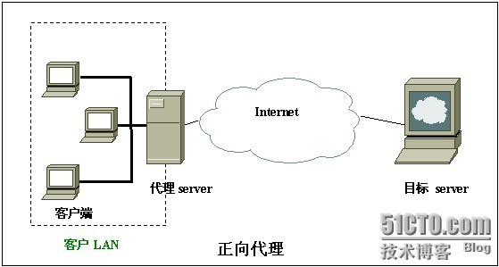
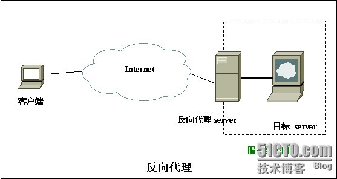

Apache提供了mod_proxy模块用于提供代理服务，能够支持的包括正向代理、反向代理、透明代理、缓存、负载均衡，
HTTP代理、FTP代理、SSL代理等若干强大的功能。
通常我们使用的比较多的，是正向代理。也就是在浏览器的网络连接属性框中，填写上一个代理服务器的ip和端口，
即可通过代理服务器中转，去浏览网页。
配置这种代理非常简单(apache2.2.X，2.2系列把代理功能都拆分成N个小模块)：
1.打开apache/conf/httpd.conf，打开mod_proxy模块。
2.打开apache/conf/httd.conf，打开mod_proxy_http的模块。
3.打开apache/conf/httd.conf，加入
ProxyRequests OnProxyVia OnOrder deny,allowDeny from allAllow from all。
重新启动服务器，在浏览器地址框中，填写上your_apache_server_ip的ip地址，端口是80，开始用代理了。
如我在家里访问某个网站太慢，但是用公司服务器上很快，那么可以在公司服务器上将这个网站通过反向代理，映射到公司服务器上来访问。
站点，也可以基于一个目录。首先在全局配置文件下，加入如下几行，打开反向代理。
1.打开apache/conf/httpd.conf，加入ProxyRequests OffOrder deny,allowAllow from all
2.打开apache/conf/httpd.conf，打开mod_proxy模块。
3.打开apache/conf/httd.conf，打开mod_proxy_http的模块。
4.打开apache/conf/httd.conf，加入ProxyPass /buop http://20.20.20.38:80/buop/
ProxyPassReverse /buop http://20.20.20.38:80/buop/
ProxyPass 很好理解，就是把所有来自客户端对http://10.9.105.2:8088/buop的请求转发给http://20.20.20.38/buop上进行处理，
ProxyPassReverse 的配置总是和ProxyPass 一致，但用途很让人费解。
似乎去掉它很能很好的工作，事实真的是这样么，其实不然，如果响应中有302重定向，ProxyPassReverse就派上用场。
举例说明，假设用户访问http://10.9.105.2:8088/buop/p1.action，通过转发交给http://20.20.20.38/buop/p1.action处理，
假定p1.action处理的结果是实现redirect到p2.action(使用相对路径,即省略了域名信息)，如果没有配置反向代理，
客户端收到的请求响应是重定向操作，并且重定向目的url为http://20.20.20.38/buop/p2.action ，
而这个地址只是代理服务器能访问到的，可想而知，客户端肯定是打不开的，反之如果配置了反向代理，则会在转交HTTP重定向应答到客户端之前调整它为
http://10.9.105.2:8088/buop/p2.action，即是在原请求之后追加上了redirect的路径。当客户端再次请求http://10.9.105.2:8088/p2.action，
代理服务器再次工作把其转发到http://10.9.105.2:8088/p2.action。
请求转发是否配置成功:
nt 10.9.105.2 8088 #在另外一台机器远程链接到10.9.105.2的8088端口
GET /buop/monit.action http/1.0 #向10.9.105.2的8088端口发送GET请求
注意事项
在linux环境安装软件时，不要占用1~1024内的端口，因为这些端口被root占用(即只有root账号能够访问，由于root为根用户，权限较大，不易开放)，
建议用1024以外的端口
apache正向、反向代理区别:
1 正向代理: 客户端无法直接访问外部的web,需要在客户端所在的网络内架设一台代理服务器,
客户端通过代理服务器访问外部的web(需要在客户端的浏览器中设置代理服务器)
适用于:
①局域网的代理服务器(一般是网关,相当于squid的一般用法)
②访问某个受限网络的代理服务器,如教育网访问某些国外网站需要找代理
2 反向代理: 客户端能访问外部的web,但是不能访问目标web,目标web所在的网络内一台机器充当目标web的代理,
客户端直接访问代理就像访问目标web一样(此代理对客户端透明,即客户端不用做如何设置,并不知道实际访问的只是代理而已,以为就是访问的目标)
适用于:
①idc的某台目标机器只对内开放web,外部的客户端要访问,就让另一台机器做proxy,外部直接访问proxy即相当于访问目标
②idc的目标机器的某个特殊的web服务跑在非正常端口如9000,而防火墙上只对外开放了80,此时可在80上做proxy映射到9000,外部访问80即相当于9000

